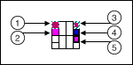

In the CLI for LabVIEW, command line operations have a parent class and each operation is built from a child class of the parent class. To define the name of the operation, you must create a child class of the parent class and specify the name of the child class.
Complete the following steps to define the name of the operation:
Open Operations.lvproj or Toolkit-Operations.lvproj, depending on whether the operation requires the LabVIEW development system only or additional LabVIEW modules and toolkits.
Note To open Toolkit-Operations.lvproj, you must install the following toolkits and library:
To define the behavior of the operation, you must override the methods of the class you created in the previous section and add code in one of the overridden methods.
Complete the following steps to define the behavior of the operation:
In the project tree, right-click the class that you created in the previous section and select New»VI for Override.
In the New Override window, select GetHelp.vi and RunOperation.vi, and click OK.
Save the project. When prompted, save the class and the overridden methods in a folder with the same name as the operation.
Note NI recommends that you put the folder in one of the following directories so that you do not need to specify the path to the folder using the −AdditionalOperationDirectory argument when running the operation.
Add code to define the behavior of the operation and save your changes. Do not modify the connector pane, as illustrated in the following figure.

Terminal
Data Type
Description
LabVIEW object of the class that you created in the previous section.
Arguments that users enter in the CLI for LabVIEW when running this operation. Each string in the array represents an argument.
LabVIEW object of the class that you created in the previous section.
A code that the CLI for LabVIEW returns to the calling application, such as a Jenkins application. For example, you can configure the CLI for LabVIEW to return 0 if the operation runs successfully and -1 if an error occurs.
Output of the operation or error messages to display in the CLI for LabVIEW console or to save to the log file.
Refer to RunOperation.vi in one of the following directories for an example of defining the behavior of the AddTwoNumbers operation, which adds two input numbers and returns the sum in the output.
To help users get started using the operation, you can document the operation by modifying the GetHelp.vi method that you created in the previous section. Users can then access the documentation by executing the LabVIEWCLI�-OperationName <operation name> -Help command.
Complete the following steps to document the operation:
Open the GetHelp.vi method from the project tree.
On the front panel, create a string control named Help and enter the documentation in this control.
Right-click the Help control and select Data Operation�Make Current Value Default to set the current text as the default value of this control. Repeat this step each time you edit the text.